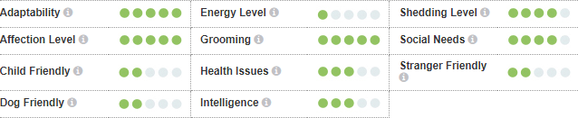

Персијска дугодлака мачка је средње величине, здепаста раса са масивном главом у односу на тело. Глава је округла и широка, уши су мале, широко постављене а лице је кратко и отворено. Очи су велике, округле и сјајне. Ноге су кратке, здепасте и снажне са великим округлим шапама и чупавим прстима. Реп је кратак и жбунаст. Длака је дуга, густа и бујна, с густом, меком поддлаком. Персијске мачке долазе у широкој палети ознака и боја.
Раса персијских дугодлаких мачака захтева свакодневну негу како би задржала свој дуги и густи слој длаке без чворова. Када се длака заплете, мачка мора бити потпуно ошишана и длака мора поново да израсте. Такође се мора обратити пажња на очи и задњицу. Ова подручја треба свакодневно чистити како би се избегле флеке. Очи персијске мачке су обично водњикаве, а очима и носу ц́е бити потребно редовно чишц́ење. Редовно дотеривање је неопходно за уклањање длаке како је мачка не би прогутала, јер ресијанцима длаке могу представљати проблем. Као и свим мачкама, препоручује се редовно вакцинисање и контрола паразита.
Свака мачка је јединствена и свака има своја посебна свиђања, несвиђања и потребе када је храна у питању. Међутим, мачке су месоједи и свака мачка мора добити 41 специфичан хранљиви састојак из хране. Проценат ових хранљивих састојака варирац́е у зависности од старости, начина живота и целокупног здравља, па не чуди то што ће енергично маче захтевати другачији баланс хранљивих састојака у својој исхрани од мање активне, старије мачке. Поред тога, треба узети у обзир и храњење правилном количином хране за одржавање ‘идеалног телесног стања’ у складу са смерницама и прилагођавање индивидуалним преференцама у вези са мокрим или сувим рецептима.
Персијске дугодлаке мачке су мирне и осећајне. Нежне су и нису толико активне као већина краткодлаких раса. Уопштено говорец́и, не смета им што живе самостално и сасвим су задовољне да буду једине мачке у кућу. Могу да буду срећне ако само мирно седе и изгледају лепо.
За симпатичан видео ове маце кликните овде